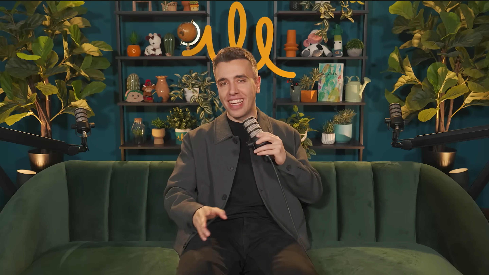
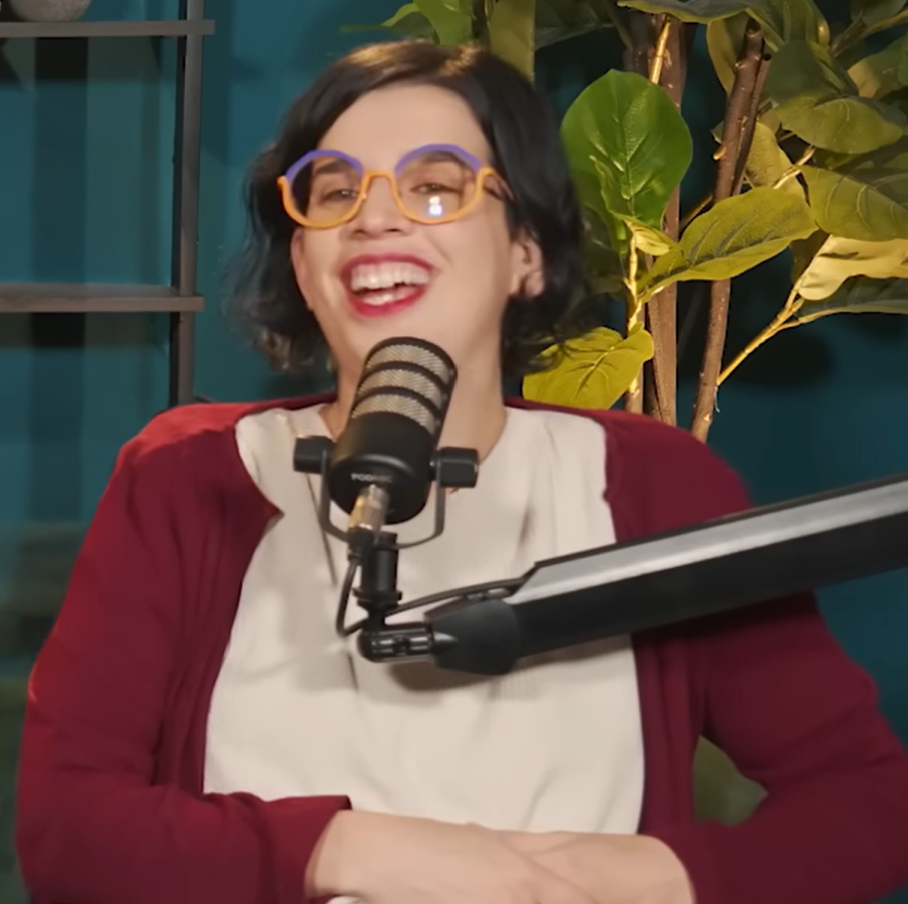
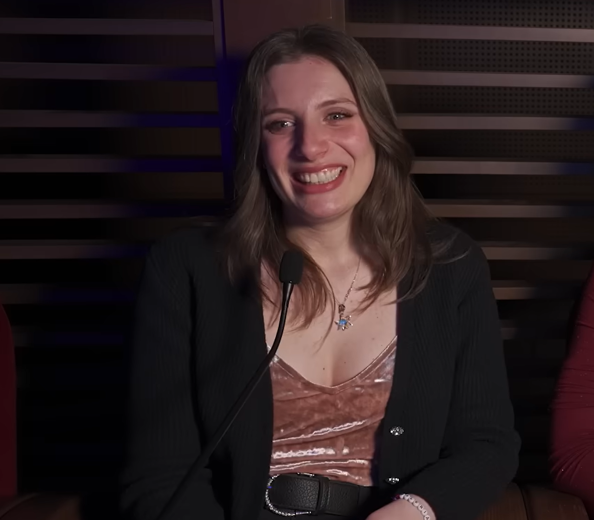
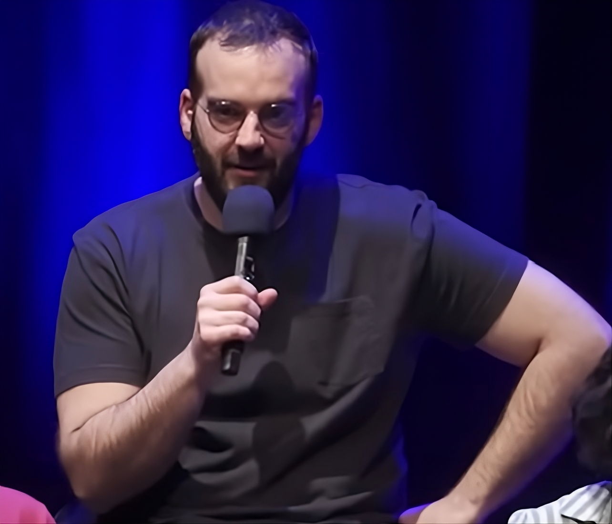
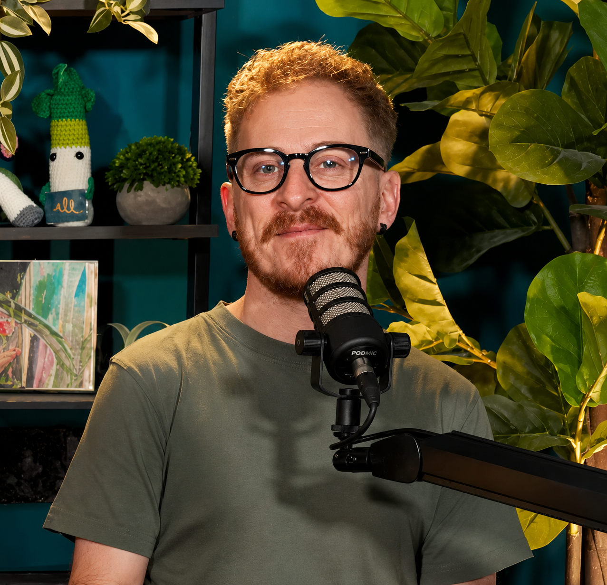

Le facce di Illumina
I volti storici, gli amici e quelli che passano quando meno te l'aspetti.
Il Nucleo Storico

Luca Dodaro
Conduttore & Ideatore
Difensore della piadina. Gli viene l'ansia facilmente, quindi non ditegli che questo sito lo leggono in tanti.
Alessandro Collura
Presenza Storica
Se non risponde al telefono per ore e poi ti scrive "che c'è?", è tutto normale.

Francesca Zanin
La mamma di Nico e Gatti
Professoressa, portatrice sana di sindrome dell'impostore e di occhiali clamorosi forniti dal marito. É la sorella di Jacopo

Jacopo Zanin
L'esperto di Spesa
Ha catalogato i supermercati con valutazioni scientifiche. Celiaco, ama la piadina alla Nutella. É il fratello di Francesca

Valeria
La nostra voce sicula
Valeria è quella che dà voce al pubblico nei live: legge le domande, filtra le follie e ogni tanto le rilancia. Ama i gatti, saluta sempre con un sonoro “Miao".
Gli Ospiti Ricorrenti (e iconici)

Turbopaolo
Supervisore del Caos
Comico, flautista occasionale e presenza che alza subito il livello di caos controllato. Quando ti guarda negli occhi e ti sussurra “vaffanculo” in modo zen, sai che stai vivendo un momento educativo.

Arnaldo Filippini
L'Esperto di panchine
È lui che giudica panchine, rotonde e fontane con la serietà di un critico d’arte. Quando tira fuori le schede tecniche delle panchine di Aosta, capisci che non stai più guardando un semplice talk.

Carlo Colombo
L'Esperto di Sanremo
Fotografo di matrimoni con una conoscenza sconfinata del Festival. Ha cantato nel coro di Bonolis.

Giuseppa (Giusy)
La Mamma di Collura
Parla per proverbi in calabrese stretto. La sua regola di vita? "Devi usare a loggica!".

Michele Tranquilli
Ex Prof. in incognito
Ex professore di inglese e ospite ricorrente nelle puntate dedicate ai prof, è uno di quelli che tornano anche dopo aver cambiato vita. Ora nessuno ha ben capito che lavoro faccia, ma lo fa molto bene.

I Ragazzi di Aoh! Studio
Pierre, Luca e Fabio
Collettivo di designer valdostani che hanno preso uno studio insieme a Luca e collaborano ogni tanto alle puntate, soprattutto quando c’è da massacrare loghi, spot e grafiche locali.